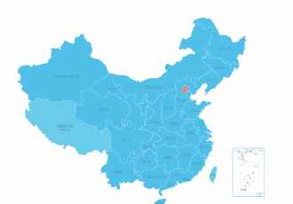
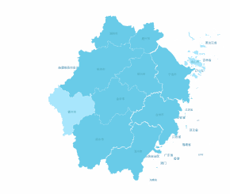
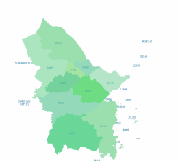
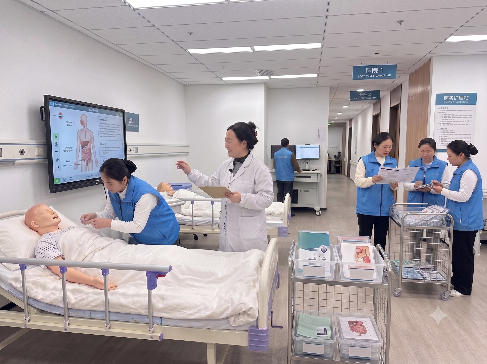
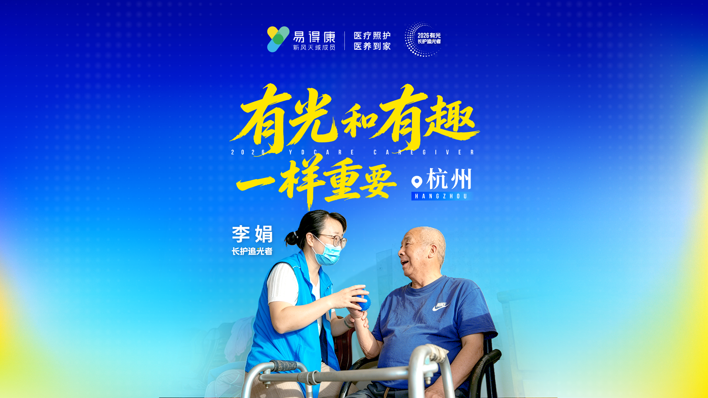

试点阶段
沉淀可复制服务能力
在长护险试点推进过程中，易得康将一线服务经验转化为可培训、可执行、可追溯的运营体系，沉淀服务流程、人才培养、质量监管与属地化管理能力。

以标准化服务与数智化监管，助力长护险高质量落地。
品牌介绍
2017年，易得康徐汇护理站正式获批上海市长期护理保险定点服务机构资质，率先在上海试点区启动长护险居家照护服务。
自试点以来，易得康持续聚焦高龄、失能、半失能、失智人群的长期照护需求，建设专业护理团队与标准化服务体系，助力缓解“一人失能，全家失衡”的民生痛点。
展业情况
*数据截至2026/06，覆盖直辖市、地级市及海南省县级行政区。
在长护险试点推进过程中，易得康将一线服务经验转化为可培训、可执行、可追溯的运营体系，沉淀服务流程、人才培养、质量监管与属地化管理能力。
2026年3月，中共中央办公厅、国务院办公厅印发《关于加快建立长期护理保险制度的意见》，推动长护险从局部试点迈向全国推开。易得康将以标准化服务、数智化监管、专业人才培养与属地化交付能力积极响应制度建设。
能力优势
构建覆盖集团、省级、城市与站点的多层级质控机制，推动服务标准在不同地区、不同站点、不同人员之间稳定执行。




易得康围绕长护险居家服务场景，建立覆盖课程培训、站点带教、专家指导与职业发展的培养体系，持续提升护理人员的专业能力、服务规范与岗位稳定性。
依托新风天域医疗生态，邀请医疗、护理、康复及认知障碍照护专家开展专项培训，提升长护险服务对复杂照护场景的应对能力。

养老护理员正式成为国家认定的职业
养老护理员纳入国家“急需紧缺职业（工种）”
《中华人民共和国职业分类大典（2022年版）》中增设长期照护师职业工种
“长期照护师”职业技能等级认定进入落地阶段
覆盖医疗照护、生活照料、康复训练等核心场景，构建系统化课程体系。
组织培训、模拟考核与职业认定，推动照护能力走向标准化评价。
建立技术与管理双通道，支持护理人员持续成长与岗位进阶。
以培训、实践、竞赛与荣誉激励，提升照护人员职业认同。
易得康围绕长护险居家照护场景打造自研智能系统，覆盖服务前、中、后关键环节，为服务监管、机构运营与一线照护提供数字化支撑。
以多维监管手段，保障服务真实合规。
以质量管理为核心，持续提升服务满意度。
以智能化工具，提升机构运营与响应效率。
以灵活配置能力，适配一城一策服务要求。
智能识别护理需求，建立服务分级基础。
结合需求、位置与人员能力，智能匹配服务计划。
通过人脸识别、蓝牙信标与 GPS 打卡确认服务到位。
依托视频语音与智能算法，支持过程监管。
通过电子签名与服务记录，完成确认留痕。
结合回访、抽检与满意度评价持续优化。
通过智能设备与远程监测支持持续照护。
以属地化精细运营为基础，结合本地地理、人文与政策环境，构建可复制、可适配的长护险服务管理体系。
结合山区、海岛、丘陵等地理条件，优化服务半径、排班与上门路径。
针对少数民族、长寿老人、重残人群等差异需求，匹配服务方式与人员配置。
依据各地政策、目录、评估与支付规则，建立本地化服务流程。
尊重方言习惯、民族习俗与社区关系，提升家庭接受度与服务信任。
结合老城区、革命老区、厂矿社区等背景，制定贴近当地的服务方案。
根据城市、乡镇、农村等发展差异，灵活配置站点、人员与监管资源。
